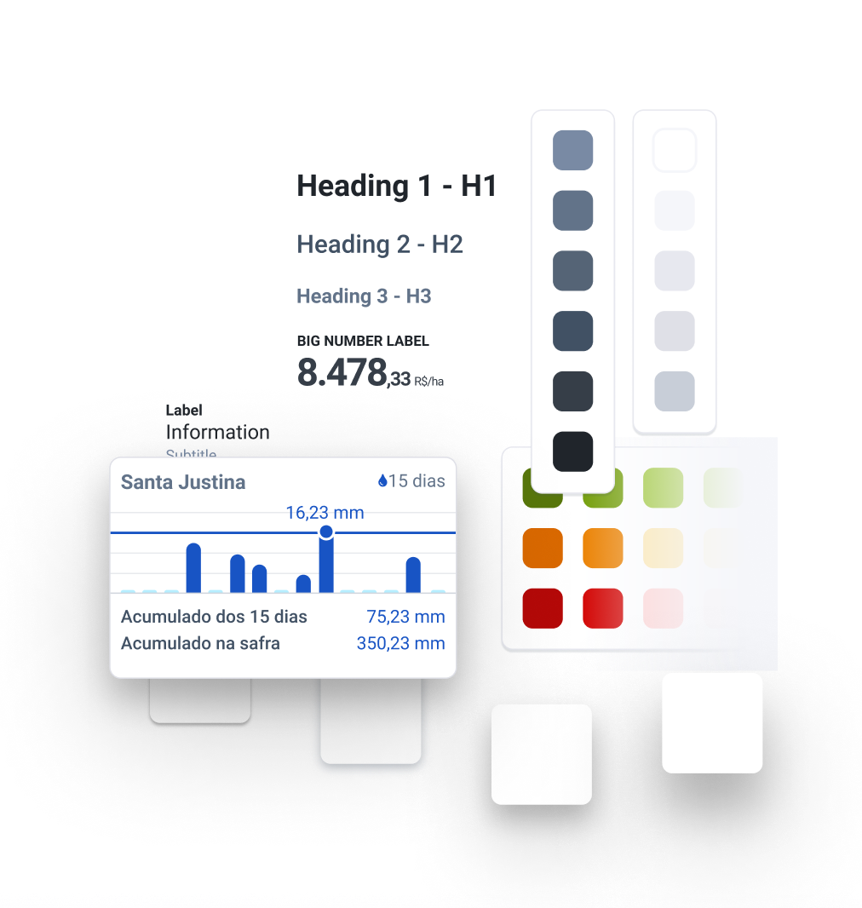

soil is Farmbox’s design system serving a wide range of usages on mobile and desktop products. ‍
Role: UI Designer Platforms: Mobile and Desktop Deliverables: Documentation, Best Practices Content, Figma files and some css code.

Helps the team
Streamlined development.
As usual, the main goal of the design system includes improving UI consistency, quality and making the development process more efficient and focused.
Nimble designers.
Spending less time building most of the UI, allowed designers to spend most of their time solving the hardest problems farmers were facing.
How could we serve the farmer?
Following the farm routine.
Most of the days go as planned. Choosing which fields to take care and which operations to run as quickly as you can, so you can better analyze the results and do it again the next day.
Managing a Crisis!
Sometimes things on a farm don't as planned and there are very few, but extremely complex decisions to be made. They asked us for EVERY single data point we could provide so they could be analyzed all at the same time.
So we had some constraints…
Studying their decision making process during the harvesting season (with great insights from our support team) helped us figure out that what we needed was a responsiveness scheme focused on optimizing for information density and clear hierarchy. ‍ Farmbox users needed the possibility of having lots of data, labels and concepts to be shown even on a smaller computer screen.
This work grew into soil.
A strict design system on a style level, with grid, color, type and components hierarchy — everything is blocked correctly and always has the proper white space around it.
My approach for creating it.
1. Analyse the way the product team enjoys working
We should keep what is working and see how can we use this as a chance to fix development problems. Some nice patterns were there, but needed to be surfaced.
Design library and code is always the same.
2. Cover all the basics as soon as possible
It has everything it should.
Principles first, tactics later!
It’s not a one size fits all. Sometimes a design solution might feel weird or wrong on a “common design sense”, but if we can prove it’s right for Farmbox and it's users it’s the right thing to do. ‍ Conventions over configuration. A designer only needs to specify unconventional aspects of the design — and should probably spend most of its time doing that! ‍ Flexible information density. It should be fine to have few elements on the screen, but it also should be straightforward to add many.
8pt Grid System
Everything trying to align left and top, centered on itself on a 8pt grid. Layouts and margins would do the heavy lifting. Was weird at first, but proved extremely powerful in letting designers push pixels until all data was shown and balanced.
Layouts take care of content disposition on the screen
Components creating rows” centered on itself
All, but the most important element, have fixed width.
The math will make everything always fit on the grid.
Farmbox mobile is used heavily under the sun…
Acessibility
✅ Color contrast ✅ Video + Images before Text ✅ Content is the best possible label.
And much more!
Pixel perfect design library.
Perfect smart-layout and resizing constraints where needed and possible.
All components have to work perfectly out of the box ‍ üö´ No component breaking!
Results
Simpler onboarding process for a new team member. A new designer can quickly get up to speed with the whole team. ‍ Quicker screens! soil helped our design team ship simple features in about 20% of the time it usually took. ‍ Not a “faster” design process… Extra time not spent on making the screens, now was spent innovating. Most of the visual design is already made, so you can really spend some time to polish what isn't.
Redesigned developer handoff process Before soil we had two phases of developer handoff: handing off the approved design, then multiple moments of “visual fixes” and extensive QA period.
After soil not only most of the visual fixes were not necessary anymore, but also allowed the design team to handoff simpler prototypes with less visual fidelity, but the confidence that it would look great on production. ‍
UI Design
How I helped a B2B SAAS have a UI that changed the way people work on a farm